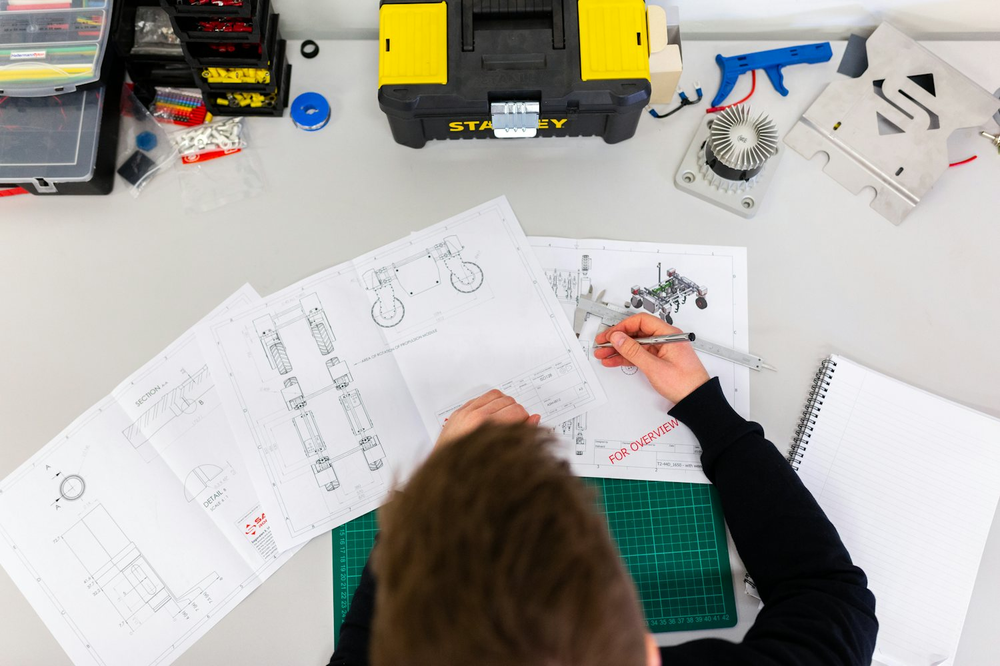

Concrete Industry Management · Chico State
Building the concrete industry's next leaders — from the classroom to the boardroom.
Educators and industry built this program together, and neither side has let go of it since 2007.
That partnership is the reason a Chico State CIM graduate arrives knowing the material, the plant and the numbers — and is ready to lead the people who work with all three.

- Program founded
- Since 2007One of only five CIM programs in the country
- Job placement
- 100%Job placement for CIM graduates
- Starting salary
- $80KAverage starting salary out of the program
- Industry partners
- 50+Industry partners behind the program
About CIM
A bachelor's degree in concrete — and in running the business.
Concrete Industry Management is a four-year business degree with concrete at its center.
Students learn the science first: how the mix behaves, how it is batched and tested, what makes a placement hold up for fifty years. Then they learn the other half of the job — estimating, scheduling, sales, quality systems and managing the crews and customers who turn that material into structures.
It is a deliberately dual degree, because the industry kept telling us the same thing: technical people who can lead are the hardest hire there is.
The material
Mix design, aggregates, admixtures, testing, placement and quality control — taught in the lab, not only on the board.
The business
Estimating, project management, finance, sales and the leadership coursework that gets a graduate promoted.
Graduates leave as quality-control managers, technical sales and service reps, plant managers, estimators and project engineers. A decade on, many of them are running the companies that trained them.

The Patron Program
Industry partners since 2007.
The Patrons are the companies and individuals who fund this program and help steer it.
Roughly 46 companies and 27 individuals sit in that group today, and together they have given close to $8 million since the program opened its doors. That money pays for scholarships, lab equipment and the day-to-day work of keeping a specialized program strong.
But Patrons were never only a funding source. They sit on the board, shape the curriculum, open their plants to student visits, take interns every summer, and hire the graduates they have watched grow up inside the program.
What Patron support includes
-
Scholarships
Every full-time CIM student receives $2,000 a semester from Patron-funded scholarships.
-
Internships
Paid summer placements at member companies, arranged through the program rather than cold applications.
-
Mentorship
Working professionals paired with students through the degree and into the first years of a career.
-
Guest speakers
Executives and technical specialists teaching directly from current projects and current problems.
-
Field visits
Batch plants, precast yards and active pours, seen at working scale instead of in a slide deck.
-
Equipment
Testing gear, lab instruments and materials donated so students train on what the industry actually runs.
-
Recruitment
A first look at graduating classes, at career events built around the program's own students.
Why Support CIM
Support here moves in two directions.
Every dollar that reaches a CIM student also reaches the industry that will hire them.
That is the whole design of the program, and it is the reason the partnership has held for nearly two decades. Students get an education the industry helped write; the industry gets people it does not have to train from scratch.
For students
- Scholarship support of $2,000 a semester for every full-time CIM student.
- Paid internships at Patron companies during the degree.
- Hands-on lab work on the testing equipment the industry actually uses.
- Mentors who work in the field, from the first year onward.
- A job at graduation — placement has held at 100 percent.
For industry
- A pipeline of trained talent in a field where hiring is the constraint.
- First look at graduates you have already worked alongside as interns.
- A voice in the curriculum, through a board of working professionals.
- People who arrive fluent in both the material and the management.
- A visible stake in the future of the industry you built a career in.

The program works because industry never handed it off. Chico State CIM
Patrons have helped shape the curriculum since 2007, and they are still in the room. That is unusual, it is the reason graduates arrive ready, and it only continues while the people who benefit from it keep paying it forward.
Scholarship Feature
$1 million
invested in CIM students through the Steve Gonzales Scholarship Fund
The Steve Gonzales Scholarship Fund.
It is the clearest proof of what this partnership does. It stands alongside the Patron scholarships that put $2,000 a semester in the hands of every full-time CIM student.
In practice that means a student can take the summer internship instead of the second job, and can graduate without the debt that quietly narrows a first career decision. It is the difference between a degree and a head start.
Leadership
Meet the CIM Board.
Industry leaders who give the program their time, not only their support.
The board sets direction, opens doors for students, and keeps the curriculum honest to what the field actually needs. Every member works in the industry the program feeds.
-
[First Name Last Name]
[Board Title]
[Company / Organization]
-
[First Name Last Name]
[Board Title]
[Company / Organization]
-
[First Name Last Name]
[Board Title]
[Company / Organization]
-
[First Name Last Name]
[Board Title]
[Company / Organization]
-
[First Name Last Name]
[Board Title]
[Company / Organization]
Board names, titles and photographs to be supplied by the program.
Support the Program
Partnership built this program. Partnership keeps it going.
Education and industry started Chico State CIM together in 2007, and neither side has stepped back since.
Your support pays for the scholarships, the equipment and the access that turn a student into a colleague. Give once, give every year, or bring your company in as a Patron and take a seat at the table.